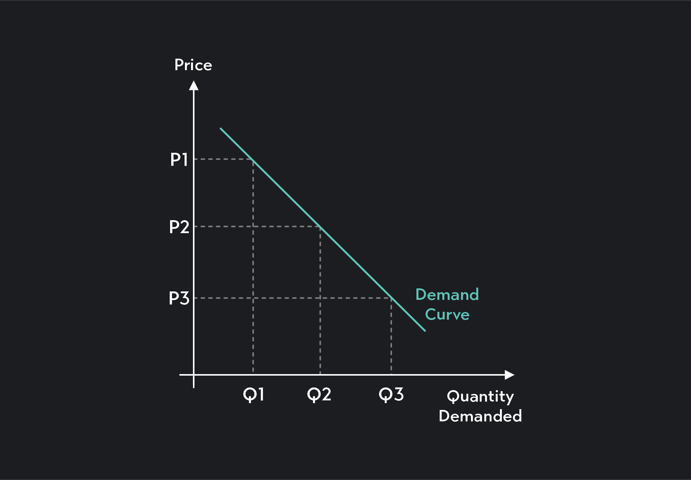

| 🌿 Araling Panlipunan 9 — Demand |

Kahulugan ng Demand
Ang demand ay ang kakayahan at kagustuhan ng mamimili na bumili ng produkto o serbisyo sa isang tiyak na presyo at panahon. Hindi lahat ng gusto ay demand — kinakailangan may kakayahang bumili.
Mga Salik na Nakaaapekto sa Demand
- Presyo ng Produkto – Kapag tumaas ang presyo, bumababa ang demand; kapag bumaba ang presyo, tumataas ang demand.
- Kita ng Mamimili – Normal goods: tumataas ang demand kapag tumataas ang kita. Inferior goods: tumataas ang demand kapag mababa ang kita.
- Panlasa o Kagustuhan – Naapektuhan ng uso, kultura, social media, at endorsements.
- Populasyon – Kapag mas maraming tao, mas mataas ang demand.
- Presyo ng Kaugnay na Produkto – Substitute (pamalit) at complementary (magkasabay gamitin).
- Ekspektasyon sa Presyo – Kung inaasahang tataas ang presyo sa hinaharap, bibilhin na ngayon kaya tataas ang demand.
Batas ng Demand
"Kapag tumaas ang presyo, bumababa ang demand. Kapag bumaba ang presyo, tumataas ang demand."
May magkasalungat o inverse na relasyon ang presyo at demand.
Demand Schedule (Halimbawa)
| Presyo (₱) | Dami ng Bibilhin (Qd) |
|---|---|
| 50 | 10 |
| 40 | 20 |
| 30 | 35 |
| 20 | 50 |
Paggalaw sa Demand Curve
- Movement (Extension/Contraction) – Pagbabago dahil sa presyo lamang. Extension: tumaas ang demand dahil bumaba ang presyo. Contraction: bumaba ang demand dahil tumaas ang presyo.
- Shift sa Kurba – Paglipat sa kanan: tumataas ang demand kahit walang pagbabago sa presyo. Paglipat sa kaliwa: bumaba ang demand kahit walang pagbabago sa presyo.
Halimbawa sa Totoong Buhay
Kapag may sale tulad ng 11.11, bumababa ang presyo kaya tumataas ang demand. Kapag nagtaas ng presyo ang isang fast food, bababa ang bibili kaya bababa ang demand. Kapag sumikat sa social media ang isang produkto, kahit mahal ay maraming bibili kaya tumataas ang demand.
Mga Konsepto na Dapat Tandaan
- Demand ≠ Gusto: kailangan may kakayahang bumili.
- Purchasing Power: kakayahan ng pera na makabili ng produkto.
- Ceteris Paribus: ibig sabihin "all things being equal" — ginagamit sa pag-aaral ng demand kung presyo lang ang nagbago.